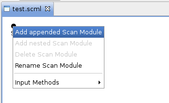
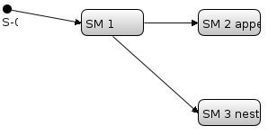

Add a Scan Module
There are two kinds of scan modules you can add: 1) an appended scan module, 2) a nested scan module. Starting with an empty scan description follow these steps:
- In the editor right click on the start event S-0 to open the context menu. Click „Add appended Scan Module”.

(The option „Add nested Scan Module” isn’t available here since events don’t have nested elements.) - Once you’ve created a scan module it is automatically named. If you right click the created scan module you can either add an appended or a nested scan module or both. If you do both the result should look as follows:

Once you’ve added one or more scan modules you can start adding devices .
Additionally plot windows could be added to visualize the measured data.